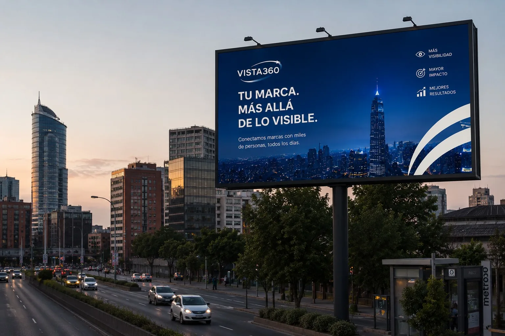
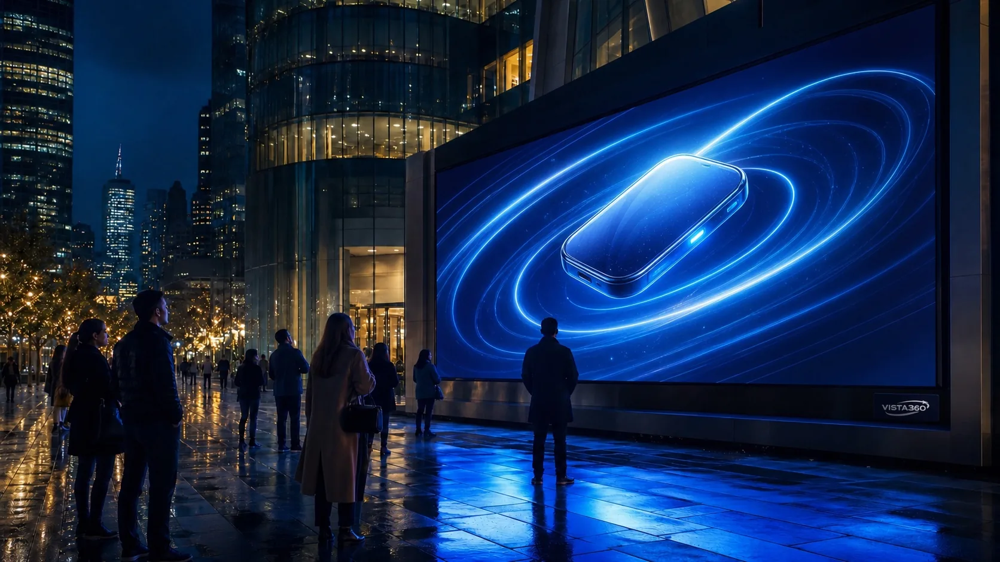

¿Dónde circula tu audiencia?
El recorrido determina qué ubicaciones tienen mayor sentido.

Elige entre soportes físicos de gran impacto y formatos digitales preparados para contenido dinámico.
Classic construye permanencia mediante superficies impresas e iluminadas. Digital incorpora movimiento y programación para campañas que necesitan cambiar durante el día.
Superficies impresas con iluminación dedicada y escala urbana. Cada formato responde a una distancia y un tipo de recorrido.
Una línea preparada para piezas dinámicas, programación y comunicación actualizable en puntos estratégicos.

El formato digital mantiene la escala de la publicidad exterior y añade la posibilidad de mostrar distintas piezas durante una campaña.
| Formato | Familia | Distancia | Contenido | Entorno recomendado |
|---|---|---|---|---|
| Mural | Classic | Media | Estático | Fachadas y corredores urbanos |
| Unipolar | Classic | Larga | Estático | Avenidas y recorridos vehiculares |
| Tótem | Classic | Cercana | Estático | Accesos y zonas peatonales |
| Panel LED | Digital | Media o larga | Dinámico | Vías y puntos de alta atención |
| Tótem digital | Digital | Cercana | Dinámico | Accesos y espacios de espera |
El recorrido determina qué ubicaciones tienen mayor sentido.
La distancia define escala, altura y cantidad de información.
La necesidad de movimiento ayuda a elegir entre Classic y Digital.
Cuéntanos qué quieres lograr y prepararemos una recomendación de formato y ubicación para tu campaña.
Recibir una recomendación →